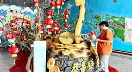

MENGGALI KEARIFAN LOKAL SEMANDING
Menjelajahi Warisan Budaya dan Ilmu Pengetahuan Sosial

Penulis: siti nurhalimah
Tahun: 2026
GALERI SEMANDING
1. Peta Wilayah Semanding

✨ Fakta Menarik:
- Semanding terdiri dari banyak desa, seperti Prunggahan Wetan, Bektiharjo, Karang, dan lain-lain.
- Wilayahnya yang bergunung-gunung membuat udaranya sejuk.
2. Pemandian Bektiharjo
Tempat ini tidak hanya untuk mandi, tapi juga memiliki nilai sejarah dan sering digunakan untuk upacara adat.
▶ Keindahan Bektiharjo2. Siraman Waranggono

Siraman Waranggono merupakan salah satu tradisi budaya yang bersifat sakral dan masih dilestarikan oleh masyarakat di kawasan Pemandian Bektiharjo. Tradisi ini dilakukan sebagai prosesi penyucian atau “wisuda” bagi para penari Tayub sebelum mereka diperbolehkan tampil di depan umum. Dalam budaya Jawa, penari Tayub sering disebut sebagai “Waranggono” atau “Sindir”, yaitu perempuan yang memiliki kemampuan menari dan menyanyi dalam pertunjukan seni tradisional Tayub.
Tradisi siraman memiliki makna penting karena dianggap sebagai tahap awal bagi seorang penari untuk memasuki dunia seni pertunjukan. Prosesi ini tidak hanya bertujuan membersihkan tubuh secara fisik, tetapi juga menyucikan hati, pikiran, dan niat para penari agar mereka dapat menjalankan seni dengan baik, sopan, dan penuh tanggung jawab.
Pelaksanaan Siraman Waranggono biasanya dilakukan di sumber mata air atau tempat pemandian yang dianggap memiliki nilai sejarah dan kesakralan, salah satunya di Pemandian Bektiharjo. Tempat ini dipercaya memiliki air yang bersih dan membawa keberkahan. Sebelum prosesi dimulai, para calon Waranggono mengenakan pakaian putih bersih sebagai simbol kesucian dan niat yang tulus. Warna putih melambangkan hati yang bersih, kejujuran, dan kesiapan untuk menjalani tanggung jawab sebagai pelaku seni budaya.
Acara kemudian dipimpin oleh sesepuh atau tokoh adat yang dihormati masyarakat. Para calon penari disiram air secara bergantian sambil dipanjatkan doa-doa keselamatan dan harapan agar mereka menjadi seniman yang berbudi baik, menjaga nama baik seni tradisional, serta memberikan hiburan yang bermanfaat bagi masyarakat. Air dalam prosesi siraman melambangkan pembersihan diri dari sifat buruk dan harapan agar kehidupan mereka dipenuhi keberkahan.
Setelah prosesi selesai, para Waranggono dianggap telah resmi diterima dan diperbolehkan tampil dalam pertunjukan Tayub. Tradisi ini menjadi bentuk penghormatan terhadap seni tradisional karena seorang penari tidak hanya dituntut memiliki kemampuan menari, tetapi juga harus menjaga etika, sikap, dan tata krama dalam kehidupan sehari-hari.
Selain memiliki nilai spiritual, Siraman Waranggono juga menjadi sarana pelestarian budaya daerah. Melalui tradisi ini, generasi muda diajarkan untuk menghargai seni tradisional sebagai warisan leluhur yang memiliki makna mendalam, bukan sekadar hiburan semata.
GALERI FOTO & INFO BAB 2
Ritual Keleman

Klik gambar untuk melihat detail!
Penjelasan: Warga berkumpul di dekat mata air atau persawahan untuk berdoa bersama sebagai wujud syukur atas kesuburan tanah dan air yang melimpah.
Tabuh Lesung

Suara: 🔊 Dengarkan irama tabuhan lesung yang gagah!
Lesung tidak hanya alat, tetapi juga instrumen musik yang menyatukan warga dalam irama kebersamaan dan gotong royong.
BAB 3: KERAJINAN & KEARIFAN HIDUP
🎯 Tujuan Pembelajaran:
- Siswa dapat mengetahui
kerajinan tangan khas Semanding.
- Siswa dapat memahami
cara nenek moyang memanfaatkan alam sekitar.
Kecerdasan dan Keterampilan Warga Semanding
Masyarakat Semanding memiliki berbagai kecerdasan dan keterampilan yang diwariskan secara turun-temurun dari nenek moyang. Keterampilan tersebut tidak hanya menjadi sumber mata pencaharian, tetapi juga menjadi bagian penting dari budaya daerah. Beberapa keterampilan khas masyarakat Semanding antara lain kerajinan gerabah atau tembikar, seni patung, dan Paes Semandingan sebagai rias pengantin tradisional.
1. Kerajinan Gerabah / Tembikar
Di Desa Karang, terdapat para pengrajin gerabah yang masih mempertahankan tradisi membuat peralatan dari tanah liat secara manual. Salah satu pengrajin yang dikenal masyarakat adalah Mbah Somi. Keahlian membuat gerabah diwariskan dari generasi ke generasi sehingga tetap lestari hingga sekarang.
Gerabah atau tembikar merupakan benda yang dibuat dari tanah liat yang dibentuk menggunakan tangan atau alat sederhana, kemudian dikeringkan dan dibakar hingga keras. Masyarakat membuat berbagai macam peralatan rumah tangga seperti gendok (tempat air), kuali, kendi, pot, dan vas bunga.
Proses Pembuatan Gerabah
Pembuatan gerabah membutuhkan keterampilan dan ketelitian yang tinggi. Tahapan pembuatannya antara lain:
-
a. Pengambilan Tanah Liat
Tanah liat dipilih dari jenis tanah yang lembut dan mudah dibentuk. Tanah kemudian dibersihkan dari batu atau kotoran agar hasil gerabah lebih halus. -
b. Pengolahan Tanah
Tanah liat dicampur dengan air lalu diinjak atau diremas hingga menjadi lentur dan mudah dibentuk. -
c. Pembentukan
Pengrajin membentuk tanah liat menggunakan tangan atau alat pemutar sederhana sesuai bentuk yang diinginkan. -
d. Pengeringan
Setelah dibentuk, gerabah dijemur di bawah sinar matahari hingga setengah kering agar tidak mudah retak saat dibakar. -
e. Pembakaran
Gerabah dibakar menggunakan kayu bakar atau sekam padi dalam suhu tinggi. Proses pembakaran membuat tanah liat menjadi keras dan kuat.
Ilmu Pengetahuan dalam Pembuatan Gerabah
Kerajinan gerabah juga mengandung unsur ilmu pengetahuan. Tanah liat memiliki sifat lunak ketika basah sehingga mudah dibentuk. Namun setelah dibakar pada suhu tinggi, tanah liat mengalami perubahan sifat menjadi keras dan kuat. Oleh karena itu, gerabah dapat digunakan untuk memasak, menyimpan air, dan berbagai kebutuhan rumah tangga lainnya.
Selain itu, gerabah mampu menjaga suhu air tetap sejuk karena memiliki pori-pori kecil yang memungkinkan penguapan air secara alami.
Nilai-Nilai yang Terkandung
- Kerja keras
- Ketekunan
- Kreativitas
- Pelestarian budaya lokal
- Kemandirian ekonomi masyarakat
 ▶ Cara Membuat Gerabah
▶ Cara Membuat Gerabah
2. Seni Patung

Di Desa Bejagung terdapat seniman patung yang memiliki kemampuan tinggi dalam membuat karya seni dari kayu maupun batu. Salah satu seniman yang dikenal masyarakat adalah Abah Janjang. Karya-karyanya sering digunakan untuk menghiasi tempat ibadah, taman, dan bangunan penting lainnya.
Seni patung adalah seni membuat bentuk tiga dimensi yang menyerupai manusia, hewan, tumbuhan, atau bentuk tertentu. Dalam pembuatannya, seniman membutuhkan imajinasi, keterampilan tangan, dan kesabaran yang tinggi.
🛠️ Proses Pembuatan Patung:
- Menentukan Desain: Seniman terlebih dahulu membuat gambaran atau rancangan bentuk patung yang akan dibuat.
- Memilih Bahan: Bahan yang digunakan biasanya berupa kayu atau batu yang kuat dan mudah dibentuk.
- Membentuk Patung: Kayu atau batu dipahat menggunakan alat khusus sedikit demi sedikit hingga membentuk pola yang diinginkan.
- Penghalusan: Setelah bentuk selesai, permukaan patung dihaluskan agar terlihat rapi dan indah.
- Pewarnaan atau Finishing: Beberapa patung diberi cat atau pelapis agar lebih menarik dan tahan lama.
🌱 Nilai yang Terkandung dalam Seni Patung:
- Ketelitian: Seniman harus sangat teliti saat memahat agar bentuk patung sesuai rancangan.
- Kesabaran: Proses pembuatan patung membutuhkan waktu lama sehingga memerlukan kesabaran tinggi.
- Kreativitas: Memiliki ide dan imajinasi untuk menciptakan karya unik dan bernilai seni.
- Nilai Keindahan: Memberikan nilai estetika atau keindahan pada suatu tempat.
- Pelestarian Budaya: Menjadi salah satu bentuk warisan budaya daerah yang harus dijaga.
GALERI FOTO & INFO
Kerajinan Gerabah
🛠️ Tahapan Membuat Gerabah:
- Mengambil tanah liat yang berkualitas.
- Membentuknya menggunakan roda putar.
- Mengeringkan dan membakarnya sampai keras.
Paes Semandingan
✨ Ciri Khas: Wajah diberi bedak tipis dan hiasan yang elegan.